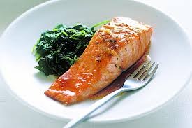

Maple Salmon

Description
This maple glazed salmon is delicious and very easy to prepare.
I love maple syrup in everything and decided to use it in the marinade.
Ingredients
- ¼ cup maple syrup
- 2 tablespoons soy sauce
- 1 clove garlic, minced
- ¼ teaspoon garlic salt
- ⅛ teaspoon ground black pepper
- 1 pound salmon